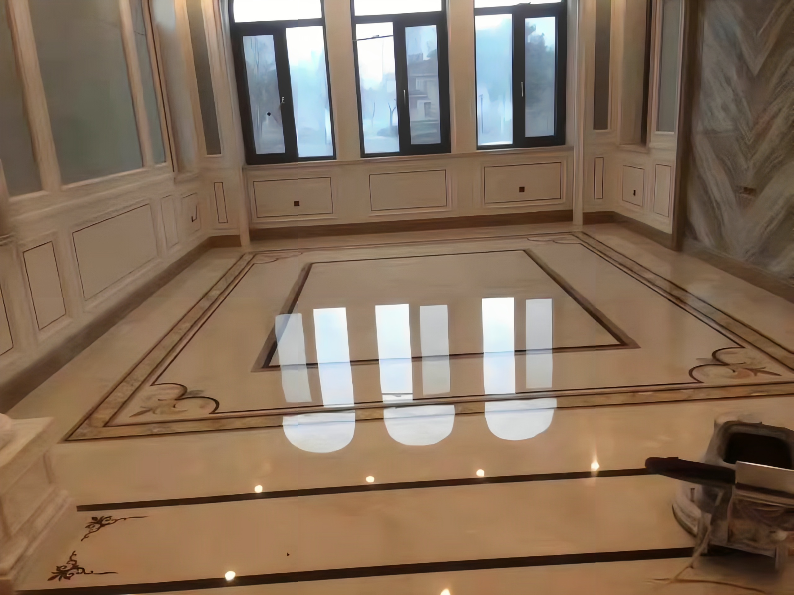

大理石晶面
大理石晶面处理的几大部骤：
-
1．在处理机械的选择上，一定要选有足够重量的晶面处理机械，如果使用刷地的机械，它的重量是达不到要求的，对大理石地面无法进行翻新。而且，马达也没有那么好，在处理大理石晶面的过程中，要求马达长时间地转，如果是其他的机器，马达承受不了长期间的转动，容易坏。
-
2．在加硬前一天，要对将要进行晶面的部分，做最大化的清洁处理，最好是能彻底地把大理石地面搞干净，并保持干爽，这样不至于影响第二天的处理效果。
-
3、选择好晶面的机器后，要对机器的功率等指标有个了解，这样才能选到合适的机器，另外，一般找熟练的人工去操作，这样对各种药水的配比比较熟悉，才能达到最好的晶面效果。
-
4．处理剂在使用前，要像喝牛奶前一样，先摇几下，把里面的液体搅动均匀，在操作的过程中，一定要防尘，防沙，防止对晶面有影响的异物进入工作场所。
-
5．把大理石地面处理干净后，第一要做的是，用手把晶面处理剂均匀地喷撒在石材地面上，用晶面处理机，配上棉垫，一遍又一遍地将晶面处理剂涂匀地涂抹在地面上，直到晶面处理剂变干，能看到反光，亮度时，再停止操作。
-
6．然后，就是要把加光剂，再像上面一步骤一样，涂到地面上，这加光剂起到增亮增光的作用，使地面更具光泽和美观。